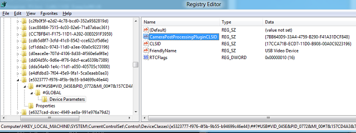
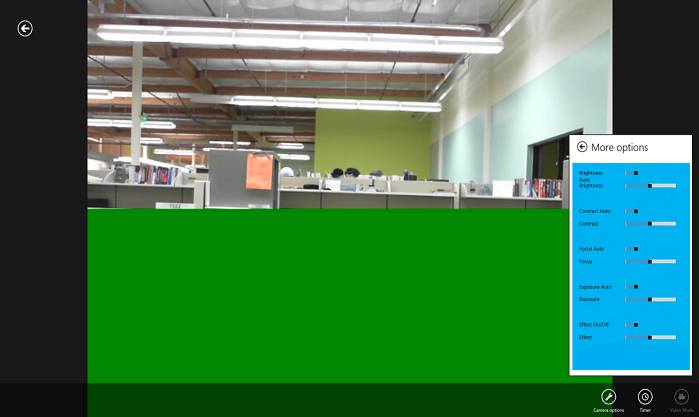
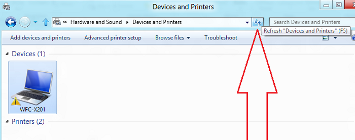

Provides a driver MFT for use with a camera's Windows Store device app. A driver MFT is a Media Foundation Transform that's used with a specific camera when capturing video. The driver MFT is also known as MFT0 because it is the first MFT applied to the video stream captured from the camera. This MFT can provide a video effect or other processing when capturing photos or video from the camera. It can be distributed along with the driver package for a camera.
In this sample, the driver MFT, when enabled, replaces a portion of the captured video with a green box. To test this sample, download the Windows Store device app for camera sample and the Camera Capture UI sample. The Windows Store device app for camera sample provides a Windows Store device app that controls the effect implemented by the driver MFT. The Camera Capture UI sample provides a way to invoke the Windows Store device app.
This sample is designed to be used with a specific camera. To run the sample, you need the your camera's device ID and device metadata package.
Note
To build this sample, you can use Microsoft Visual Studio 2013 (Professional, or Ultimate) and Windows Driver Kit (WDK) 8.1 Update. This sample will not build with Microsoft Visual Studio Express 2013 for Windows Desktop, because the sample uses Active Template Library (ATL). You can get Visual Studio 2013 and WDK 8.1 Update here.
You can also build this sample with Visual Studio 2013 (Professional or Ultimate) and Windows Driver Kit (WDK) 8.1.
For Windows Driver Kit (WDK) 8 samples, download the WDK 8 samples pack. The samples in the WDK 8 samples pack will build only with Microsoft Visual Studio Professional 2012 (Professional or Ultimate) and WDK 8.
Related topics
- Concepts
- Windows Store device apps for cameras
- Windows 8 device experience
- Media Foundation Transforms
- Roadmap for Developing Streaming Media Drivers
- Samples
- Windows Store device app for camera sample
- Camera Capture UI sample
Operating system requirements
| Client | |
|---|---|
| Server |
Build the sample
The following steps explain how to build the sample and register the DLL so that a Windows Store device app for your camera can use it.
- Make sure you have the prerequisites installed. This sample requires Visual Studio Professional 2013 or Visual Studio Ultimate 2013, and the WDK 8.1.
- Open and build the SampleMft0 Solution.
Note To build for ARM, follow these steps:
- Using Configuration Manager, from the drop-down box for Active solution platform, select <New...>. In the New Project Platform dialog box, under New platform, select ARM and click OK.
- Open project properties for the SampleMft0 project, and follow these steps:
- Under Configuration Properties > General, set Use of ATL to Static Link to ATL.
- Under Configuration Properties > C/C++ > Code Generation, set Runtime Library to Multi-threaded (/MT).
- Under Linker > Input, edit Ignore Specific Default Libraries to include shlwapi.lib and urlmon.lib.
- Copy SampleMft0.dll to C:\Program Files (x86)\SampleMft0 (or C:\Program Files\SampleMft0) on a 32-bit system).
- Open an administrator command prompt and navigate to the new location of DLL.
- Run regsvr32 on SampleMft0.dll.
- On an x64 system, build the x64 version of the DLL and repeat steps 3 to 5, copying the 64-bit DLL to C:\Program Files\SampleMft0).
- Run regedit, and open the device registry key for your camera, under HKEY_LOCAL_MACHINE\SYSTEM\CurrentControlSet\Control\DeviceClasses\.
- The following example shows a path to a device registry key for a camera. Your camera has a different device ID and may have a different device class:
Text HKEY_LOCAL_MACHINE\ SYSTEM\ CurrentControlSet\ Control\ DeviceClasses\ {E5323777-F976-4f5b-9B55-B94699C46E44}\ ##?#USB#VID_045E&PID_075D&MI_00#8&23C3DB65&0&0000#{E5323777-F976-4f5b-9B55-B94699C46E44}\ - In Registry Editor, under the GLOBAL#\Device Parameters key, add a
CameraPostProcessingPluginCLSID value, and set its value to {7BB640D9-33A4-4759-B290-F41A31DCF848}. This is the CLSID of the Driver MFT defined in the SampleMFT0 project.

- The following example shows a path to a device registry key for a camera. Your camera has a different device ID and may have a different device class:
Run the sample
Install the Windows Store device app
Follow the instructions for building and running the Device app for camera sample. You need a copy of the device metadata package for your camera. If you don’t have device metadata, you can build it using the Device Metadata Authoring Wizard. For more info, see Step 2 of the step-by-step guide: Create device metadata for your Windows Store device app.
Test the sample
- With your camera attached, build and run the Camera Capture UI sample.
- When the Camera Capture UI is displayed, tap the Camera options button and then click
More in the Options flyout.
- If the Windows Store device app is correctly installed, the More options flyout that is shown should contain Effect On/Off and Effect controls..
- If the Driver MFT is installed, the bottom half of the video preview will be green. Modify the effect by adjusting the
Effect On/Off and Effect switches in the More options flyout.

Troubleshooting
If the More options flyout doesn't contain Effect On/Off and Effect controls, check the following:
- Make sure you enabled test signing before installing the
Windows Store device app for camera sample. Enable test signing by running
bcdedit -set testsigning onin a command prompt. - Make sure Package Name, Publisher Name, and App ID in the device metadata match the fields defined in the package.appxmanifest file of the Device app for camera sample.
- Make sure you are using the Camera Capture UI sample to test.
- If you have an internal camera (rather than an externally connected one), follow the requirements for your camera described in "Appendix A: Requirements for identifying internal cameras" in the Developing Windows Store device apps for Cameras white paper. Note that you don’t have to provide the PLD information described in the paper, if your camera does not expose PLD info in its ACPI tables.
- If you have an internal camera, after installing the
Device app for camera sample, refresh the PC using the Devices and Printers folder. Select the PC in the folder, and click the Refresh button. The camera itself should not be visible in the
Devices and Printers folder. This is because internal cameras are enumerated as part of the PC device container.

If the green box in the bottom half of the video preview doesn't appear, check the following:
- Check that the Effect On/Off switch in the More Options flyout is set to On.
- Check that the SampleMFT0.DLL is registered and that you have entered the CLSID of the Driver MFT under the device registry key for the camera you are using to capture video, as described in Building the sample.
- Check that SampleMFT0.DLL is in a subdirectory of Program Files.